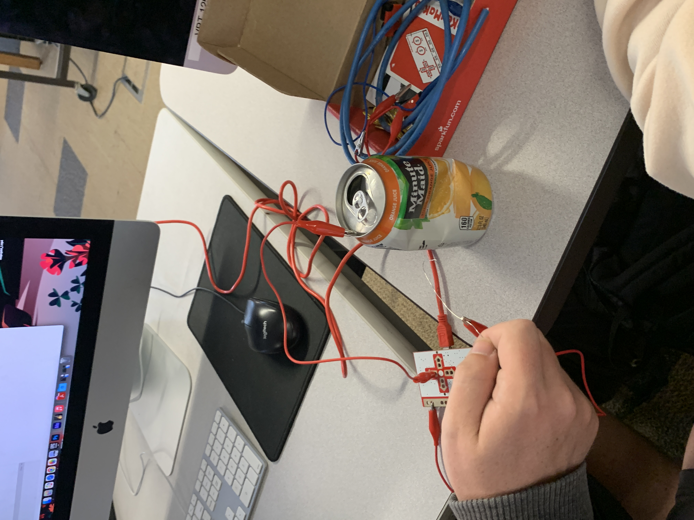

By: Danny, Conrad, Joseph
Here this is where you can provide a short description to the project. Possibly an introduction, an overview, and instructions on how to manipulate the project.
Think of this like an artist statement for the work itself.
Then you can provide more context if needed. Consider this an opportunity to host documentation and images of your project throughout it's development. If you have a paper portion, then you can be very brief here and save the content for your essay.
First attempt with aluminum cans.
Considered using copper wire as a drumstick.
Settled on using alluminum foil taped to cardboard instead of alluminum cans.